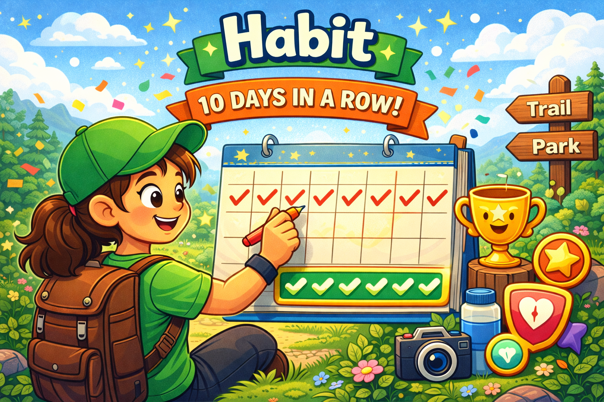

PLANNER
A map, a location and a time. Let Walker's Planner do the preparation for you, so you can focus on what matters: enjoying your walk.
JOURNAL
Personal fitness milestones. Precious memories. Let Walker's Journal help you easily and seamlessly record your walking journey.
HABIT
Motivation. Quality. Consistency. Let Walker's Habit build a solid walking routine to fit your goals, time and busy schedule.